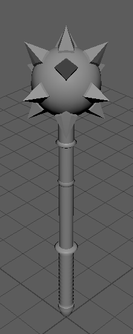
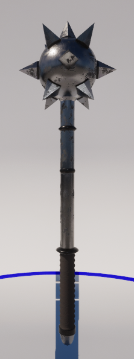
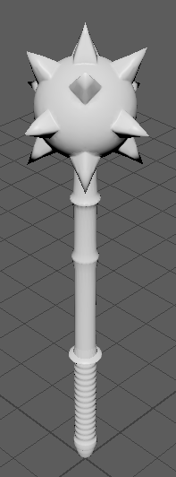
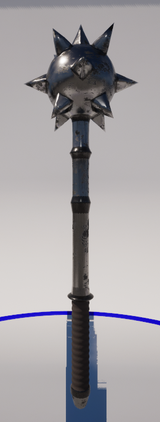

This is the first project for my 3D Asset Pipeline course.
The assignment was to make low and high-poly versions of a prop in scale for a character in Unreal Engine.
The low-poly version was made in Autodesk Maya, and the high-poly version was created by retopologizing the
low-poly version in Autodesk Maya and Mudbox.
Both versions were textured in Adobe Substance Painter.
For the final submission, the models were imported into Unreal Engine 4 to make manual Level of Detail (LOD) overrides.
While the camera is far away, the low-poly model is displayed to save rendering resources.
When the camera moves closer, the model is swapped to the high-poly version to display more detail.
I chose to model a morningstar because it is my favorite fantasy weapon, and thus fits well into many video games.
It can be a versatile model, working as both a decoration and an item a character can use.
This model has its pivot point located in the handle so animations can be made more accurately.
Additionally, this placement ensures that a character will hold it correctly in Unreal Engine.

The low-poly morningstar in Autodesk Maya.

The low-poly morningstar in Unreal Engine.

The high-poly morningstar in Autodesk Maya.

The high-poly morningstar in Unreal Engine.